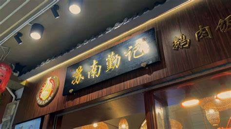
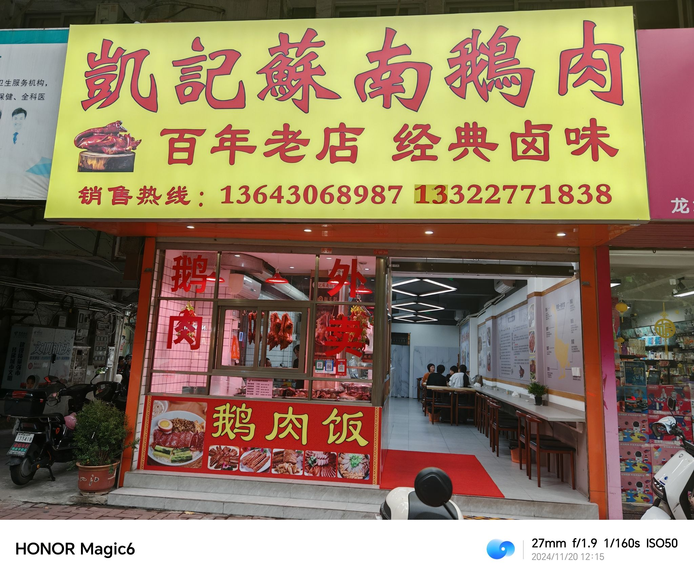

潮汕卤鹅 - 潮汕美食瑰宝
潮汕卤鹅简介
潮汕卤鹅是广东潮汕地区的传统名菜，属于潮菜系。它历史悠久，是潮汕人餐桌上的常客，也是宴请宾客时必不可少的佳肴。其独特的制作工艺和醇厚的口感，使其成为潮汕饮食文化的重要代表之一。
历史渊源
潮汕卤鹅的历史可以追溯到唐宋时期。当时，中原移民南迁带来了先进的烹饪技术和饮食文化，与潮汕本地的食材和习俗相结合，逐渐形成了独具特色的卤制技艺。随着时间的推移，潮汕卤鹅不断发展和完善，成为了潮汕地区的标志性美食。
制作工艺
- 选鹅：选用潮汕著名的良种鹅——狮头鹅，这种鹅体型大、肉质鲜嫩，是制作卤鹅的最佳选择。
- 处理：将鹅宰杀、去毛、洗净后，在鹅身上划几刀，以便入味。
- 卤制：准备由多种香料（如八角、桂皮、香叶、甘草、草果等）熬制而成的卤汁，将鹅放入卤汁中，用小火慢炖数小时，直至鹅肉熟透、入味。
- 晾置：卤好的鹅取出后，放置一段时间，让其表皮更加紧实，口感更佳。
品尝体验
潮汕卤鹅色泽金红透亮，鹅肉鲜嫩多汁，鹅皮滑润Q弹，卤香醇厚，肥而不腻。搭配上特制的蒜泥醋汁或辣椒醋汁，味道更加丰富。吃的时候，先尝一口鹅肉，感受其鲜嫩的口感和浓郁的卤香；再咬一口鹅皮，体验其独特的嚼劲；最后喝上一口卤汁，让醇厚的味道在口中散开。
店铺推荐

苏南勤记卤鹅(总店)
这家店的潮汕卤鹅制作工艺传统，选用新鲜的狮头鹅，卤汁味道浓郁。鹅肉口感鲜嫩，鹅肝更是入口即化，深受当地人和游客的喜爱。
地址：[汕头市金平区芙蓉园30幢油料大厦东畔102号之二及二楼]

凯记苏南鹅肉
该店铺的卤鹅在传统工艺的基础上进行了创新，卤汁中加入了独特的香料配方，使卤鹅的味道更加独特。店内环境干净整洁，服务周到。
地址：[汕头市金平区龙眼北路114号1幢105铺面]